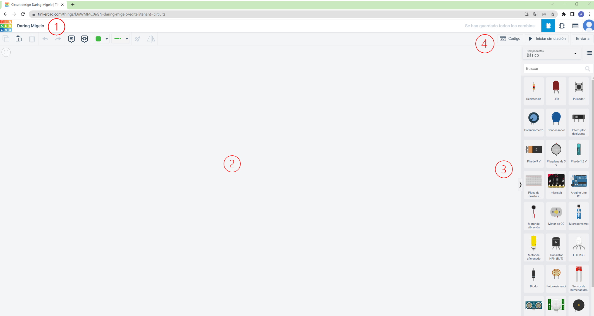
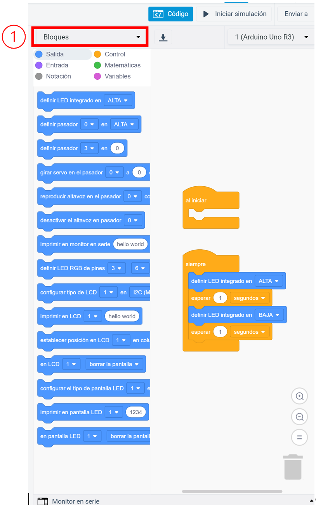

Ha llegado el momento de conocer el simulador y editor de código que vamos a utilizar para crear nuestros programas.
Se trata de una aplicación online que nos permite realizar simulación de montajes de circuitos y programarlos. Además, nos permite un montón de cosas más...
La aplicación se llama TINKERCAD.
¿Cómo accedemos?
Para acceder a la página principal de Tinkercad debéis hacer clic aquí. Utilizamos el acceso con Google, mediante nuestra cuenta corporativa.
En la siguiente imagen podéis ver los elementos más importantes. Se ha añadido un número para que sea más fácil identificarlos.
A continuación os voy a explicar todos los números que aparecen en la imagen anterior:
- Tus diseños. Aquí encontraréis los diseños que tengáis realizados. Como por ejemplo:
- Diseños 3D.
- Circuitos.
- Bloques de códigoc.
- Nuevo. Aquí podéis comenzar un proyecto nuevo.
- Recursos. Desde aquí podéis acceder a toda la información sobre el editor de código.
- Usuario. Datos personales de la cuenta.
Vamos a entrar en la creación de un nuevo circuito
Clicamos en "Nuevo" y después en "Circuitos".
Accedemos a la pantalla de simulación de circuitos, aquí haremos los montajes y programación de nuestros circuitos.

A continuación, te muestro toda la información de la imagen anterior:
- Nombre del proyecto. En este campo debemos ponerle nombre al proyecto, debe ser claro y fácil de identificar.
- Zona de trabajo. Aquí haremos los montajes de los circuitos. Para introducir los componentes necesarios los arrastramos desde la barra de componentes situada a la izquierda
- Barra de componentes. Aquí se encuentran todos los componentes que podemos utilizar. Como puedes ver en la parte superior hay un campo para filtrar los componentes que se muestran. También, tenemos un buscador, justo debajo.
- Código. Clicando aquí, nos cambia la barra derecha, mostrándonos el editor de código. Con él realizaremos los programas que le pasaremos posteriormente a la placa Arduino UNO. Se nos muestra de la siguiente manera:

En el campo 1, podemos cambiar el modo de edición del código. Podemos ver el código de tres formas diferentes:
- Bloques
- Bloques + Texto
- Texto
 Como ya sabes, necesitamos programar nuestra placa Arduino UNO con un lenguaje de programación.
Como ya sabes, necesitamos programar nuestra placa Arduino UNO con un lenguaje de programación.